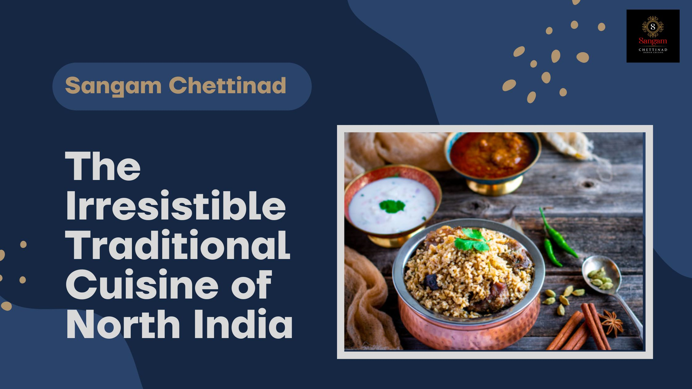
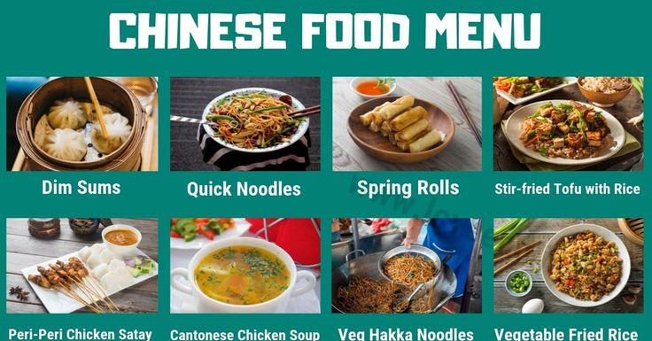

North Indian Foods
There is no sincerer love than the love of food

South Indian Foods
Food is my love language.
Chinese Food
Chowing down on some tasty Chinese eats!
Home Content
Provides Essential Nutrients: North Indian, South-Indian , chainese cuisine incorporates dairy products such as milk, yogurt, and paneer, which are high in calcium and protein. It also includes a variety of vegetables rich in vitamins, minerals, and antioxidants.
North Indian Dishes
More spicy more tasty
North Indian curries usually have thick, moderately spicy and creamy gravies. The use of dried fruits and nuts is fairly common even in everyday foods. Dairy products like milk, cream, cottage cheese, ghee (clarified butter) and yogurt play an important role in the cooking of both savory and sweet dishes.
South Menu

Tasting the world, one dish at a time.
South Indian food is known for the use of generous coconut in their curries. Other basic and common ingredients include curry leaves, mustard oil, red chillies and oil etc. Here we have tried to demystify and explain the different cuisines of South India. Have a look!
Chainese cheese
Life's too short for bad Chinese food.
South Indian food is known for the use of generous coconut in their curries. Other basic and common ingredients include curry leaves, mustard oil, red chillies and oil etc. Here we have tried to demystify and explain the different cuisines of South India. Have a look!
More Information
Contact-us
Email:ABCD@gmail.com
Mobile NO:8345346345
Aboout-us
People don't just want recipes; they want stories. They want to know the inspiration behind your dishes, the history of the ingredients, and the memories associated with the flavors. By telling a story, you can create an emotional connection with your readers and make your content more memorable.
comment
Email:ABCD@gmail.com
Mobile NO:8345346345